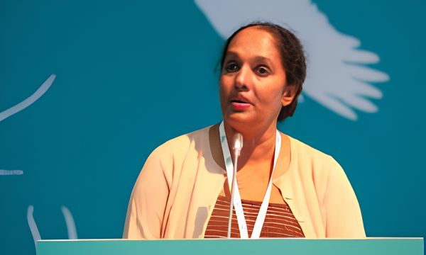

Chairman,
Central Environmental Authority,
Battaramulla.
Department of Chemistry,
University of Kelaniya.
Department of Zoology
Faculty of Science
University of Peradeniya
Executive Director,
Waste Management Authority,
Western Province,
Sri lanka
B2B Operations Lead,
Phoenix Industries